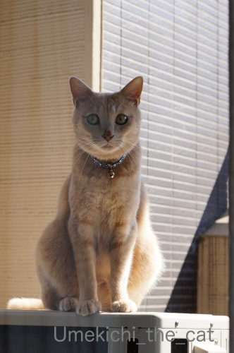
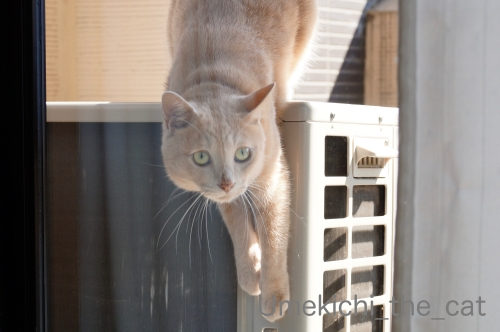
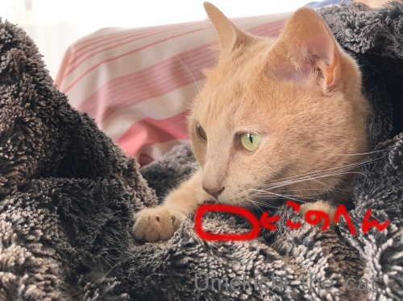
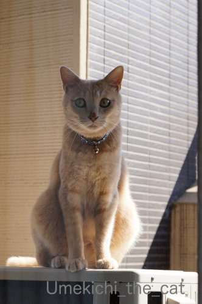
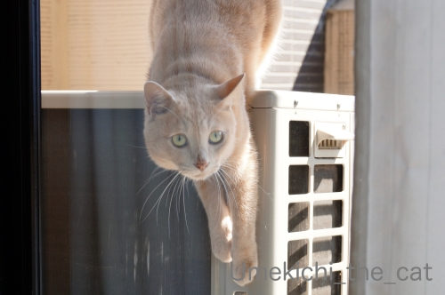
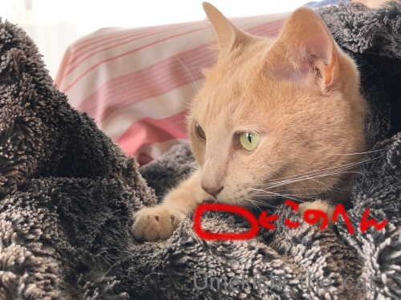

困ったときは控えめに [梅吉]
ベランダ遊びに飽きた梅吉さん。

![[猫]](https://blog.ss-blog.jp/_images_e/101.gif) わし おうちにはいりたい
わし おうちにはいりたい

なんで まど しまっとるんやろ
それはエアコンがついてるからです。

おかーさん いてへんのやろか・・・
いますよ。さっき目が合ったじゃないですか。

もしもーし
目が合った後私がちょっと動いたらもう見失ってます(⌒-⌒;

どーいうこっちゃー！

あの〜
この間無言の梅吉さんwww
前記事にzombiekongさんから「窓にへばりつく姿を見たい」と
リクエストいただきましたので早速記事にしてみました＾＾
家に入りたくなったらドアのところで鳴いて知らせてくれれば良いのに
もしくは付き添い兼盆栽のお手入れで一緒にベランダにいるおっとに訴えれば良いのにって思うのですが
大抵静かに困っている梅吉です( ´艸｀)

幾分過ごしやすい気温になってきたらちゅちゅう要求onおかーさんのお腹の上、も増えてきました＾＾

このブランケットの決まった場所にしかちゅうちゅうしません。
かっぺかぺになった場所があるのですがそこがちゅうちゅうポイント(*>艸<)
梅吉が吸うから洗剤で洗いたくないしちゅうちゅうポイントが消えちゃうので水洗いのみ。
お日様が出ているときは紫外線消毒＆掃除機で吸う・・・とお手入れも結構気を使いますよw
 ↑ガブッと一押し↑
↑ガブッと一押し↑
如水庵の「筑紫もち」。
ひよく米のおもちです。きな粉をまぶし黒蜜でいただきます。
わらび餅みたいな感じ。
お上品なお味でしたー＾＾

それはエアコンがついてるからです。
いますよ。さっき目が合ったじゃないですか。
目が合った後私がちょっと動いたらもう見失ってます(⌒-⌒;

この間無言の梅吉さんwww
前記事にzombiekongさんから「窓にへばりつく姿を見たい」と
リクエストいただきましたので早速記事にしてみました＾＾
家に入りたくなったらドアのところで鳴いて知らせてくれれば良いのに
もしくは付き添い兼盆栽のお手入れで一緒にベランダにいるおっとに訴えれば良いのにって思うのですが
大抵静かに困っている梅吉です( ´艸｀)
幾分過ごしやすい気温になってきたらちゅちゅう要求onおかーさんのお腹の上、も増えてきました＾＾

このブランケットの決まった場所にしかちゅうちゅうしません。
かっぺかぺになった場所があるのですがそこがちゅうちゅうポイント(*>艸<)
梅吉が吸うから洗剤で洗いたくないしちゅうちゅうポイントが消えちゃうので水洗いのみ。
お日様が出ているときは紫外線消毒＆掃除機で吸う・・・とお手入れも結構気を使いますよw
如水庵の「筑紫もち」。
ひよく米のおもちです。きな粉をまぶし黒蜜でいただきます。
わらび餅みたいな感じ。
お上品なお味でしたー＾＾
2019-09-16 00:00
nice!(76)
コメント(22)

カフェオレ色の梅吉

梅吉 2023年8月10日 永眠


梅吉と出会った譲渡会

犬猫の理由なき殺処分ゼロ
妄想広告
UMEKICHI 光

爆発的に早い！
時々攻撃的！
Thanks to Mr.Boss365
爆発的に早い！
時々攻撃的！
Thanks to Mr.Boss365

目だけで訴え掛けてるみたいだニャ（ﾟ□ﾟ）
by 英ちゃん (2019-09-16 00:28)
リクエストにお応えいただいてありがとうございます。
ホントに"静かに困って"るんですね~。梅吉さんこういうところはおっとりしていて大切にされてる猫ちゃんだとわかりますわー。うちの奴らだったらホラー映画の悲鳴みたいに大騒ぎしますよ。
by zombiekong (2019-09-16 02:08)
目で訴えている梅吉さん、表情が豊かですね(^_^)
やはり大物ですね！
by kou (2019-09-16 06:26)
大きな声を出さない良い子なんですね。
食事の準備中に「食わせろ！」コールするサブくん、
黙って待ってるソックス君を見習って欲しい＾＾；
by ぽちの輔 (2019-09-16 07:51)
入れて欲しいって気持ちが表れてますねぇ～♪
我が家はＬｅａがベランダに出たら
窓は開けっぱなしです（笑
虫が入ってきたりして
嫌なんですけどね(;^_^A
by きぃ (2019-09-16 08:32)
ちゅうちゅうポイント、不思議～。
何故にそこだけ好きなんやろか？？？(◎_◎;)
by よーちゃん (2019-09-16 09:55)
梅吉さんベランダに出て入れなくなったのですね！
エアコン効いていると窓閉めちゃいますね(^^)
by ma2ma2 (2019-09-16 10:31)
困った顔の梅吉くん、老眼の目でじっくりみてみると
鼻がにじにじしてる？？(笑)
角度でそう見えてるのかな。
うちはベランダが狭いので、こんなふうに出さないけど
別の部屋で閉じ込められているあおくんは、しばらくは無言でドアを開けて貰うのを待ってます(笑)
そのうち何か言ってくるかな〜って放置してると30分くらい経って
「ぼく、ここだよーー」って鳴いてますｗｗ
梅吉くんのちゅうちゅうポイント触ってみたい^m^
どんな感じになってるのかは想像出来ます！(笑)
by リュカ (2019-09-16 11:04)
あはは～梅吉さんホントに困ってる、困ってる～っ(≧▽≦)
鳴いたり暴れたりせずにじっと待っているところがいじらしいですね♪
そう言われると、ウチのも洗面所やクローゼットに閉じ込めてしまった時鳴かないです。
普段は体当たりして遊べ～ごはん出せ～とうるさいのに面白いですね^^;
かっぺかぺポイント、ウチでは果物カゴに敷いてあるタオルです。
こてつの口に入るので白か淡い色の今治タオルを使用。洗剤は使わずお湯洗い＆天日干しです^^
安いタオルはびっくりするぐらい色落ちするのがあるし、白くても漂白剤が残ってたりしたら嫌なので下僕が使います( ;∀;)
by ゆきち (2019-09-16 11:51)
こんにちは。
ベランダから覗き見？梅吉くん、良い子にしてますね。
小生猫、ベランダから飛び降りそうなので出来ないシチュエーションです。
梅吉くん、エジプト座りしていると、意外に下半身がしっかりしている感じですね。
肩幅・上半身がスリムなのかな？
「ちゅちゅう要求」でブランケット洗濯もお気遣いあり、梅吉くん愛を感じます。
如水庵の「筑紫もち」を食べたことないですが・・・
最終写真を見ると「信玄餅」に見えますね！？(=^･ｪ･^=)
by Boss365 (2019-09-16 12:37)
訴えることなく静かに困ってますねー^m^
ニャンコが鳴く時って、その子それぞれポイントが違うような気がします。
梅吉さんの鳴きどころはどこかなー。
きっと、鳴かなくても伝わる、以心伝心を信じてるのね。
「筑紫もち」、カラフルな包みですね。信玄餅に中身も似てるけど、包みはもっと地味です(^^;)
by ChatBleu (2019-09-16 14:03)
深川めしですが、私も本場のは食べた事がありません（ﾟ□ﾟ）
てゆーか、割と近場の名物はほとんど食べてないかも？
まぁ、何時でも行けると思うと食べないものですw
by 英ちゃん (2019-09-16 15:46)
鳴かなくても目力で訴えてますね。
すごいビームパワーを感じます。^^;
by yes_hama (2019-09-16 21:37)
さすが「漢 梅吉さん」は家に入りたくても
そっと目だけで訴えるんですね(⌒-⌒; )
うちは何かを訴えるとき、かみさんの目の前に行って
「ニャーニャー」とか細い声で鳴きますw
by ニッキー (2019-09-16 21:49)
目が点になってますね、梅吉さん。
おかーさんに優しく対応して欲しいんですよ。
おかーさんに絶対の信頼を持っているので、助けに来てくれるのを待っている。
そう言う事ですね＾＾
by riverwalk (2019-09-16 22:24)
まさに目は口ほどにモノを言うですね！
「あの～」って感じが可愛い（＾＾）
by 藤並 香衣 (2019-09-16 22:39)
なんかベランダで反省させられているみたい(笑)
ちゅうちゅうポイントは甘い味がするのかなぁ～
by yamatonosuke (2019-09-17 01:33)
大抵静かに困ってる←！！(*´▽｀*)この反応ナノと一緒~~(≧▽≦)
by palpal (2019-09-17 10:42)
さあ~困った！困った！どうしよう。て、付き添いのおっとさんに頼めばいいのに～^^かわいいにゃあ。
by ニコニコファイト (2019-09-18 07:05)
おかーさん いてへんのやろか・・・に
きゅんとしちゃったよ～。
困った梅吉くん、可愛いっ(#^^#)
by emi (2019-09-18 14:29)
困ったお顔が見たくてわざと見ていないフリ
しちゃいそうです、私(((*≧艸≦)ﾌﾟﾌﾟｯ
梅ちゃん、あまり主張しないタイプなのですね。
うちもサイレントキャットなので鳴かないですー。
目で訴えるか、カシカシ引っ掻いて音で気づかせようとします。
梅ちゃんはおとーさんではなくおかーさんに開けてほしいのね＾＾
困ったお顔にキュンキュンしちゃいます(*´ω｀*)
ちゅうちゅうポイント！うちもあるのかなぁ＾＾
今度調べてみよーっと(*￣ー￣*)ﾆﾔﾘｯ
by カトリーヌ (2019-09-18 16:29)
梅吉さん、しずかに困ってますーね！
おかーさん、いてへんのやろか？って、ちょっと不安になってるの？
キュンキュンしちゃう～～＾m＾
おとーさんじゃダメなの？ あ、お仕事に夢中だから、って思ってるのかな。
ちゅうちゅうポイントがあるから洗えない？
優しい～～＾＾
by sana (2019-09-18 22:11)